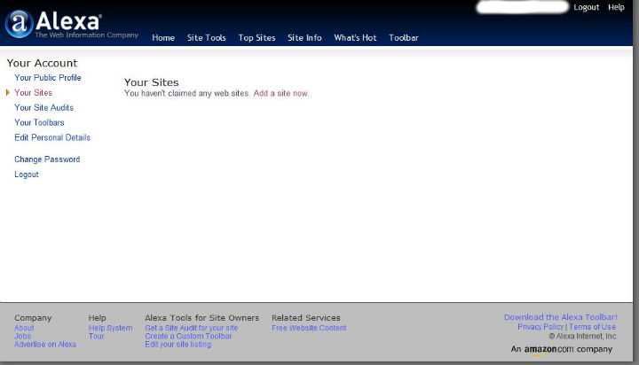
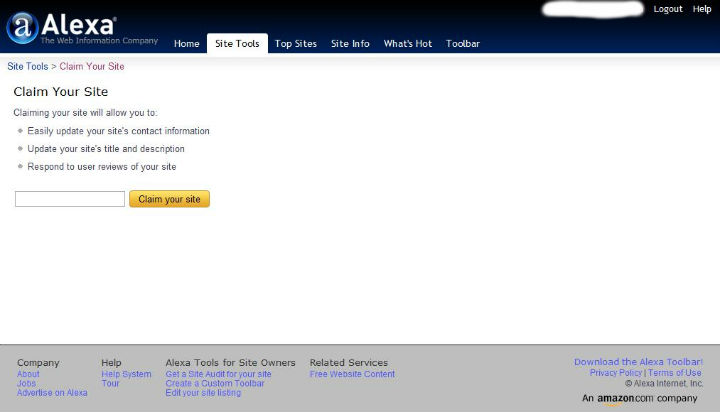

IBM主机技术一本通
周末去市图书馆走了一圈，竟然让我看到有本《IBM主机技术一本通》。这本书前两个月同事买了，貌似100多，现在京东报价是96元，淘宝上也差不多。当时我就快速翻了一遍，第一感觉是：书很厚，看了目录，贴近当前我所做的内容，还有就是内容丰富，涵盖的主机技术比较全，但貌似感觉有点罗列的成分，比较适合主机新人，给他们一个整体框架的印象。当然，800多页的书也并不是都是罗列，有很多内容是很详细的，我认为是：每个主机人都可以有针对性的看，你会的，快速过，不会的，详细看，最好要在大机上实践验证，这样记得牢。
刚拿回来，这么重的书我都背回来了，看来不看是对不住了。更何况是不花钱的好书。只不过没花钱买感觉有些对不住作者了。作者吕新民应该算国内主机界的资深前辈了吧。看人家的工作经历可以追溯到我出生之前好几年呢。
这是作者的新浪博客：http://blog.sina.com.cn/newmanworkshop,可以多关注下，都是为了学习进步嘛，希望前辈多出书呐！
好了，我会有一个详细的学习计划，好好把这本书吃透，从中汲取自己目前还欠缺的知识。
comments
Read More
介绍几个在线的资源
在平常，如果嫌麻烦，不想安装软件的话，可以试试在线的。特别是云计算正在慢慢普及，以后估计可能一个网络账号行遍互联网了。拭目以待吧！这里介绍几个我还比较常用到的在线资源。先声明，是本人用过的发现比较好用的，虽然写在这有些广告的嫌疑。
在线听歌
亦歌：http://www.1g1g.com
一听：http://www.1ting.com
就个人来说，我计较倾向于亦歌，因为它的干净，界面简单。
在线改图
http://pixlr.com/editor/
这个可是号称在线版本的Photoshop啊。我觉得功能上来说，如果你不是影楼工作追究卓越的，而只是像我一样日常做些照片图片的修改，图片修改尺寸，再上点简单效果什么的，那么pixlr完全可以胜任你的要求。就我来说，本站所有的图片都是在pixlr修改的。如果你和我一样，嫌系统自带的画图工具太烂而又不想去安装个庞大的photoshop或者 ...
comments
Read More
外企email常见英语缩写
说几个在外企工作跟老外email或者聊天工具中常用的英语缩写：
AFAIK：as far as I know
APP： application
ASAP： As soon as possible
ATB：all the best
BTW： by the way
Biz： business
B4：before
CC：carbon copy(抄送)
CUZ： because
FAQ：frequently asked questions
FE： for example
FTF： face to face
FYI： for your information
F2T：free to ...
comments
Read More
如何用键盘按出人民币符号
偶然发现的，写在这记一下：
如果你现在按下键盘 Shift+数字键4出来的是美元"$"符号的话，
你可以先按一次Shift,再接着按Shift+数字键4,出来的就是人民币"￥"的符号了。
要变回美元"$"的符号的话同理，先按一次Shift，再接着按Shift+数字键4,出来的就是人民币"$"的符号了。
comments
Read More
如何提交网站到Alexa
大家都知道网站的Alexa全球排名是一项权威的数据，那么如何将自己的网站信息提交到Alexa呢？
1、登陆Alexa主页http://www.alexa.com/点击右上角的Register注册一个自己的账号。
2、注册好之后登陆，点击Your Site(你的站点)，提示你没有申明过任何站点。这时点击“Add a site now”来添加你的站点。

3、在输入框中输入你的站点名称，比如我的就输入：http://flyuphigh.com然后点击"Claim your site"来声明你的站点。

4、Alexa需要验证你对输入的站点确实有所有权，不然你随便瞎输网址了都可以了。右击“this file”,把此验证文件下载到本地，然后通过FTP传到你网站的根目录下。比如我的话上传完之后就是flyuphigh.com/BTcj7U4QWU9rex4HiGWNv5rF7IY.htmlS,上传完点击看看有没有 ...
comments
Read More
非常好的学英语的网站
在国内，我认为最好的学英语的方式就是看英语视频，今天来推荐几个我觉得很不错的网站！
1、爱布谷CCTV-NEWS
这个是中国网络电视CNTV，上面有丰富的节目资源，网址是爱布谷CNTV。需要学英语的话可以看CCTV-NEWS。不得不说这里面有很多不错的节目，比如海客谈(crossover)，China24和Asia Today，Culture Express，Biz Talk,还有很多不错的主持人，比如邹悦,季小军,杨锐,田薇，爱华，James Chau，芮成钢等等。从我去年底开始看到现在，我是感觉到这个网站在不断的提升档次的，感觉得到大家都很用心在做节目，是不错的学习英语的途径之一。
2、网易公开课
不得不说，网易公开课是我今年发现的少数好网站之一，网址是网易公开课。这个网站几乎手机了现在世界名校的主流课程，有哈佛，牛津，斯坦福，耶鲁等等，课程涵盖范围也是非常的广，包括计算机领域，伦理心理学领域，医学建筑学领域，法律领域，经济金融等等 ...
comments
Read More
Linux+ssh+chrome(chromium)+proxy switchy + gSTM翻墙
上一篇讲到的是windows下的利用ssh+chrome(chromium)+proxy switchy + Myentunnel翻墙，其实在linux下和windows下没什么区别，都是用ssh代理，只是利用的客户端软件不一样而已。windows下用Myentunnel，linux下我们一般用gSTM。
gSTM (Gnome SSH Tunnel Manager) 是一款图形化的 SSH 隧道端口重定向管理工具 点击这里下载后安装，设置和之前讲得Myentunnel差不多.也是必填的几个：SSH服务器地址,SSH用户名，SSH密码，SSH端口3022，本地端口7070。
Proxy switchy的设置请参照我的另一篇文章 <>
comments
Read More
ssh+myEntunnel+chrome+proxy switchy翻墙
在windows/win7下如何翻墙？告诉你答案：ssh+myEntunnel+chrome+proxy switchy插件翻墙。
1、注册SSH账号
SSH是建立在应用层和传输层基础上的提供可靠传输的安全协议。在这里您首先需要去注册一个SSH代理的账号，一般是几块钱一个月的就挺好的了，当然也有免费注册的，不过免费的可能速度不是很快或者连接不稳定。注册SSH的网址我就不发了，不然就有广告的嫌疑了。自己到网上一搜一堆的那种。要是实在找不到的可以通过邮箱54xiaowoniu@sina.cn跟我联系，我告诉你怎么注册。基本上15分钟搞定。
2、下载MyEntunnel
MyEntunnel是用来登录SSH服务器并在本机自动架设一个socks5代理的软件，下载并安装Myentunnel运行。
在桌面右下角任务栏上出现了黄色的锁，说明还没连接上。右击显示，作如下设置：

这里，SSH服务器栏填你在上一步中注册SSH账号的服务器地址。一般你注册好SSH账号后服务器地址，SSH端口，用户名和密码都是知道了的，相应地填上就可以了。本地端口填7070,这个要和浏览器Chrome，Proxy switchy的一致，这个下面会讲到。
另外，记得勾上图中的那几个选项，比如失败自动重连什么的。设置好后再重新连接，黄色的锁就会变成绿色的 ...
comments
Read More